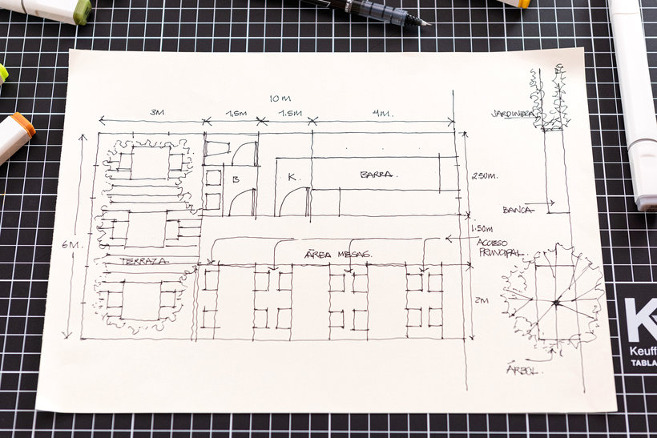

Capítulo 2: Del boceto al croquis
En el capítulo anterior, te pregunté qué tipo de dibujo haríamos en la fase de "Generación y selección de ideas". Efectivamente, cuando estamos explorando soluciones, necesitamos algo rápido y esquemático.
Este capítulo verás la diferencia entre un boceto y un croquis.
Una vez que tenemos una idea, necesitamos plasmarla en papel para poder analizarla, mejorarla y compartirla. En esta fase creativa del proceso tecnológico, no empezamos con un plano perfecto, sino con dibujos más sencillos y rápidos.
graph LR
A[Boceto] ----> B[Croquis];
B ----> C[Plano];2.1. El Boceto: La primera idea
El primer dibujo que realizamos se llama boceto. Es la forma más rápida de representar nuestra idea inicial.
Sus características principales son:

- Se dibuja a mano alzada, es decir, sin usar reglas ni otros instrumentos.
- No tiene por qué ser perfecto, pero sí debe ser claro para que se entiendan los aspectos fundamentales del objeto, como su forma o tamaño.
- No guarda las proporciones exactas y no lleva anotadas las medidas (no está "acotado").
2.2. El Croquis: El dibujo detallado
Cuando ya hemos elegido la idea que más nos gusta a partir de los bocetos, pasamos a un dibujo más elaborado: el croquis.

El croquis también se realiza a mano alzada, pero es mucho más preciso. De hecho, se considera la representación gráfica definitiva de la idea y debe contener toda la información necesaria para que alguien pueda fabricar el objeto. Esto incluye:
- Formas y detalles bien definidos.
- Dimensiones (medidas), materiales, colores, etc..
En resumen, pasamos de una idea general (boceto) a un diseño concreto y con medidas (croquis).
Hemos visto que tanto el boceto como el croquis se hacen a mano alzada. Ahora, si quisiéramos crear un dibujo todavía más preciso y "limpio", ¿qué tipo de herramientas crees que necesitaríamos usar en lugar de solo nuestra mano y un lápiz?